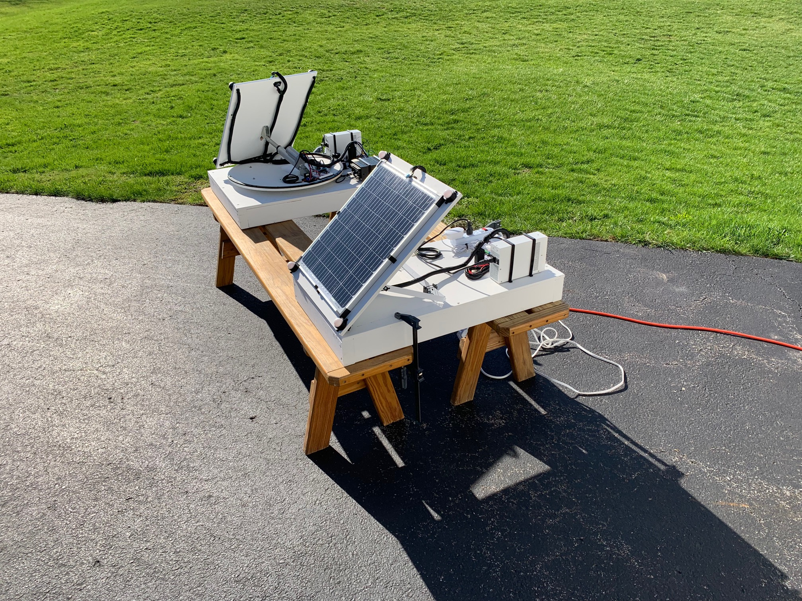

This dashboard displays power generation data collected from two solar panel systems. One system is static, it's zenith angle and azimuth angle fixed for the entirety of a day's worth of data collection. The zenith angle is approximately 43°, which is the latitude of Rochester New York. The azimuth (heading) is due south at 180°. The dynamic system uses a linear actuator and a servo motor to rotate and spin the panel towards the sun in the sky. The base on which the panel is mounted on is assumed to begin at 180° so that the panel can know it's relative angle. An Arduino Uno R4 Wifi acts as the computational unit on each system, collecting sensor data and performing adjustments on the dynamic system. Approximately every minute, the arduino sends sensor telemetry to a Raspberry Pi server. A Raspberry Pi will act as both a broker for MQTT communication, and as a subscriber to data coming from the arduinos. Data is then processed on the Pi and inputted into a python SQLite database, which can be viewed live on the Pi's monitor. This data can then be exported as a JSON file, uploaded to the github repo, and visualized on this pages website.
